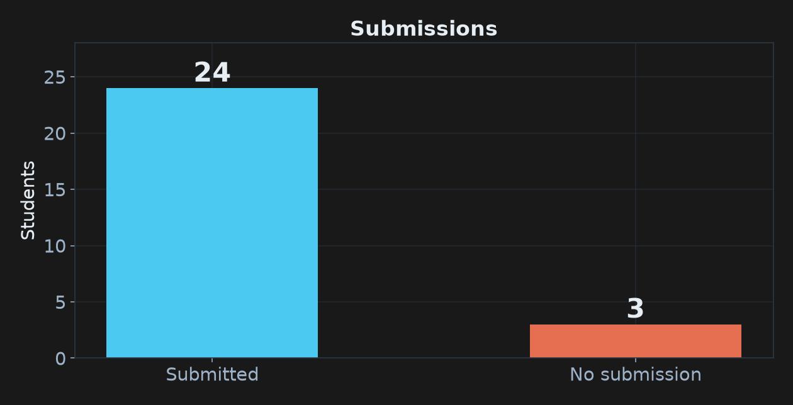
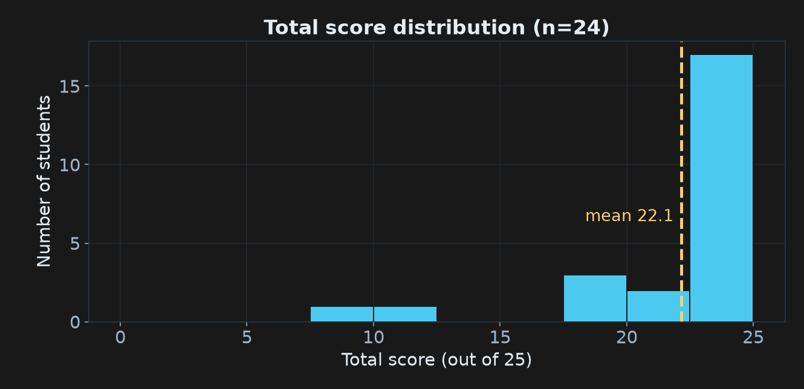
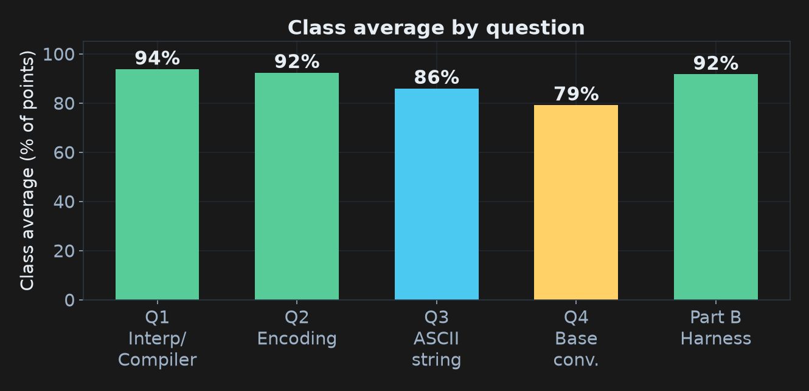
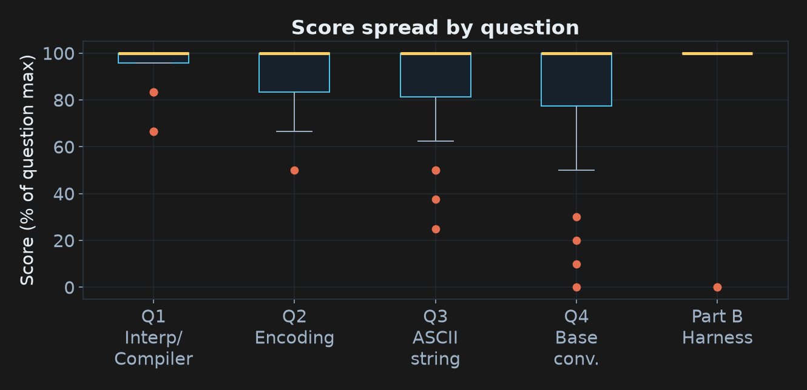
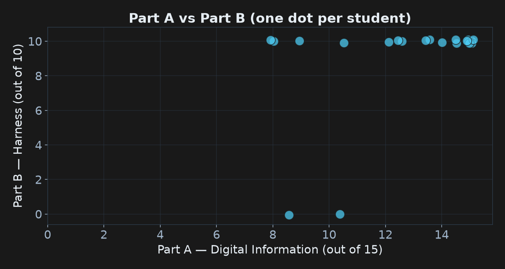
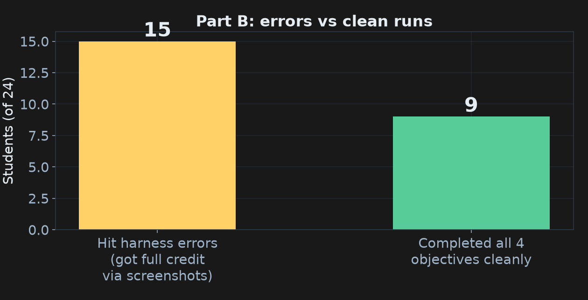
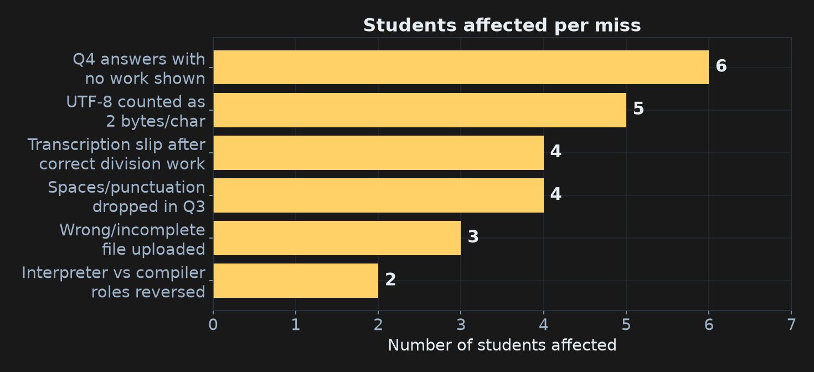

Assignment 1 — How We Did
Digital Information + Your First Harness Stress-Test
COMP 150-003 · Week 3 · All results anonymized — you are a random letter tonight
Part 1 — The Numbers
Doing the data-science thing on our own assignment.
This is exactly the kind of analysis you'll build yourself by December.
24 of 27 submitted

If you're one of the 3 (DNS1–3): talk to me tonight. The door is open, but it won't stay open forever.
The class did well — really well

Mean 22.2 / 25 · median 24.25 · ten perfect scores. The left tail is small — and every point lost there is fixable tonight.
Where points were won and lost

Concepts (Q1/Q2) were nearly universal. The gap is mechanics: Q4 base conversions. That's our review target.
Q4 divided the class the most

Read the boxes: tight at the top for Q1–Q3, long whiskers on Q4. Same lecture, very different outcomes — the difference was showing and checking work.
Knowing ≠ executing

Each dot is a student. Nearly everyone sits high on Part B regardless of Part A — honest observation was the assignment, and the amnesty covered the errors.
Yes, the harness errors were real

15 of 24 hit quota/model errors — a provider problem, not a you problem. Documented errors earned full credit, as promised. Tonight we fix every harness.
The top misses, counted

Six patterns explain nearly every lost point in the class. One slide each, coming up.
Part 2 — The Six Misses
Real (anonymized) examples from your submissions.
If you recognize your own — good. That's the fastest way to never repeat it.
Miss #1 — Answers with no work shown (6 students)
What it looked like:
1293698 → hexadecimal = 13BD02 …and nothing else. No divisions, no remainders.
That answer is wrong (correct: 13BD82) — and with no work, it scored zero. (numbers changed to the example X; the pattern is real)
The rule, as announced: correct answer with no work = full credit (you won the bet).
Wrong answer with no work = 0. Work shown = partial credit even when the final answer slips.
Several students kept most of their Q4 points only because their division steps were on the page.
Takeaway: showing work isn't for me — it's insurance for you. It converts "wrong answer" into "one wrong digit."
Miss #2 — UTF-8 counted as 2 bytes per character (5 students)
What it looked like:
ASCII size: 18 bytes ✓ UTF-8 (Plane 0) size: 36 bytes ✗
The thinking: "Unicode characters take 2 bytes, so double it."
Here's the thing: that rule is real — it just belongs to a different encoding. And the real story is good enough that it's worth ten minutes. Mini-lecture time.
Every character is just a number
A = 65 · é = 233 · 中 = 20,013 · 🎉 = 127,881
ASCII (1963) is a tiny catalog: 128 characters, numbers 0–127.
Unicode is the big catalog: every character in every language, ~150,000 numbers and counting. "Plane 0" just means the first 65,536 entries — where almost all everyday text lives.
The key idea: Unicode only assigns numbers. It says nothing about bytes. Turning numbers into bytes is a separate job, done by an encoding — and there are two big ones: UTF-8 and UTF-16.
Hold onto this: catalog vs. byte-rule. The miss came from blending them together.
The biography of one bit
ASCII uses 7 bits (128 numbers) — so in an 8-bit byte, ASCII's top bit is always 0. Why 7? History, three ways:
1963: ASCII was designed for teleprinters, where every bit cost transmission time. 6 bits couldn't fit lowercase; 7 could; 8 was "wasteful padding."
Then: the "spare" 8th bit got a job — a parity check for detecting errors on noisy phone lines. (The 8-bit byte itself only became standard in 1964, a year after ASCII shipped.)
Then: parity moved into hardware, the bit came free again — and for 30 years every vendor used bytes 128–255 differently: Latin-1, DOS code pages, Mac Roman, KOI8… A hundred incompatible answers to "what does byte 200 mean?"
The arc: born as padding nobody wanted to pay for → spent adolescence as a checksum → middle age as a battleground of incompatible alphabets → and in 1992, one final career move…
UTF-8: the bit becomes a flag
Sketched by Ken Thompson on a diner placemat in 1992: use ASCII's spare top bit as a signal.
0xxxxxxx → plain ASCII, unchanged since 1963 · 10xxxxxx → continuation piece · 110/1110/11110 → "a 2/3/4-byte character starts here" — count the leading 1s, that's the byte count.
Real bytes of A🎉A — 3 characters, 6 bytes:
01000001 starts with 0 → A · 11110000 → "4-byte character starts" · 10011111 10001110 10001001 → its 3 continuations (glue the leftover bits → 127,881 → 🎉) · 01000001 → A again.
Why this design won: every ASCII file ever written is already valid UTF-8 · no byte of 🎉 can ever be mistaken for a letter or a slash · land anywhere in a stream and you know instantly whether you're mid-character. Today ~98% of the web is UTF-8.
The cliff at character 128
U+007F (127): 01111111 — one byte, the last free ride.
U+0080 (128): 11000010 10000000 — two bytes.
The number 128 would fit in one byte (10000000) — but that pattern is reserved as a continuation marker. The flag system spent it. So characters 128–2,047 (all accented Latin, Greek, Cyrillic, Hebrew, Arabic) pay 2 bytes; most of Plane 0 beyond that (including Chinese) pays 3; past Plane 0 (emoji), 4.
Footnote: the first printable character that costs double is U+00A1 — ¡ — upside-down punctuation expressing surprise. Fitting.
So where did "2 bytes each" come from? UTF-16 — and the payoff
UTF-16 is the other encoding. Its unit is 16 bits: every Plane 0 character = exactly
2 bytes, written straight in. (Unicode 1.0 believed 65,536 characters would last forever; Windows, Java, and JavaScript committed to 2-bytes-each in that innocent era and still carry it — it's why JavaScript says
"🎉".length is
2.)
| UTF-8 | UTF-16 |
|---|
| plain English | 1 byte | 2 bytes |
| é, Greek, Cyrillic | 2 | 2 |
| 中 (CJK) | 3 | 2 |
| 🎉 | 4 | 4 |
The payoff: your Q3 string is pure ASCII, so in UTF-8 it costs exactly what ASCII costs:
18 bytes = 18 bytes. The "×2" answer was UTF-16 thinking.
Takeaway: UTF-8 sizes the box to the number; UTF-16 uses a 2-byte box. Nobody lost points — my slide was ambiguous, and that's on me. But now you know the whole story, placemat and all.
Miss #3 — Correct work, wrong final answer (4 students)
What it looked like: a perfect division chain…
293698/8=36712 r2 · 36712/8=4589 r0 · 4589/8=573 r5 · 573/8=71 r5 · 71/8=8 r7 · 8/8=1 r0 · 1/8=0 r1
…then the remainders copied out as 10755022 — an extra digit appeared. Correct: 1075502.
(numbers changed to the assignment's example X — the pattern is real, from 4 submissions)
The 10-second check that catches this every time: convert your answer back.
1·8⁶ + 0·8⁵ + 7·8⁴ + 5·8³ + 5·8² + 0·8 + 2 = 293698 ✓
One student in the class did exactly this back-conversion check on every answer. It works.
Takeaway: transcription — not math — was the #1 way correct work lost points. Always verify by converting back.
Miss #4 — The spaces are characters too (4 students)
What it looked like: encoding Hi, I am Alex 3698 as
72 105 44 73 97 109 … — 14 codes for an 18-character string. The comma survived; every space (32) vanished.
The correction: walk the string one character at a time, including every space and punctuation mark:
H=72 · i=105 · ,=44 · ␣=32 · I=73 · ␣=32 · a=97 · m=109 · ␣=32 · …
18 characters → 18 bytes. The assignment even had a hint: "do not forget spaces and punctuation."
Takeaway: to a computer, a space is just byte 32 — as real as any letter. If you can type it, it gets encoded.
Miss #5 — Interpreter and compiler, reversed (2 students)
What it looked like:
"Interpreters turn code into instructions; compilers turn instructions into code."
"Interpreters are necessary for computers to understand code."
The correction: both translate your code → machine instructions. The difference is when:
• Interpreter: translates while running, line by line (Python) — quick to test, slower to run.
• Compiler: translates the whole program first (C, C++) — faster to run, must recompile after changes.
Takeaway: one question to ask yourself: when does translation happen? During the run → interpreter. Before the run → compiler.
Miss #6 — The upload itself (5 students, 3 lost something)
The rule was "one PDF" — here's how it bent: a PDF ending mid-question · a .dotx template that scrambled the math · experiments living only in loose screenshots, never in the document · two submissions split across files (harmless — everything was findable).
Our part and yours. The syllabus didn't say this clearly, and Sakai's upload box invites multiple files — that's on us; the syllabus now spells it out. Nobody lost points for formatting — only for genuinely absent content. Going forward: one PDF, everything in it (photograph handwritten work and embed it), and open the file before you upload it.
Takeaway: formatting slips are forgivable — missing content isn't recoverable. Thirty seconds of checking protects hours of effort.
A note on handwritten work
The risk you're taking: handwriting a grader can't decipher is treated like work that isn't there. If your final answer is wrong and we can't read the steps, there's no partial credit to give — the work-shown insurance only pays out if the work is legible.
This time it worked out — the handwritten pages we received were readable and earned their credit. But that was luck, not policy. Going forward (now in the syllabus): typed answers are the standard. If you include handwriting: write large and legibly · photograph in good light · type at least your final answers.
Takeaway: your work only counts if the grader can read it. When in doubt, type it out.
Part 3 — Work Worth Stealing
Anonymized slices of genuinely excellent habits from this class.
Steal these. That's what they're for.
Student I — verified every answer by converting back
After each Q4 conversion, a one-line check:
Check: 1(8⁶) + 0(8⁵) + 7(8⁴) + 5(8³) + 5(8²) + 2 = 293698 ✓
Every answer confirmed against the original number before submitting. (numbers swapped to the assignment's example X — the habit is verbatim)
Why it matters: this is the habit that separates "I think it's right" from "I know it's right" — and it's the same instinct behind testing code. Ten seconds per answer.
Student M — caught the harness inventing facts
Asked the harness for our course's office hours. It answered confidently — with completely made-up names and times. When pressed, the harness admitted:
"I generated a confident but entirely fake answer because I lack a grounded retrieval tool."
Why it matters: this is confident fabrication — the single most dangerous LLM failure mode. It sounds exactly like a real answer. The only defense is what this student did: verify against a source you trust.
Student L — caught the harness being confidently out of date
Asked a factual question about a public figure, then checked the answer independently — and found the harness was wrong: its training data predated a recent event, but it answered as if it knew.
Why it matters: a model's knowledge has a cutoff date it won't volunteer. "Was it right?" isn't paranoia — it's the workflow. Trust, but verify. Especially when the answer sounds certain.
Student D — discovered what "no memory" really means
Asked a fresh session to recall their major. The harness "couldn't remember" — then found the answer anyway, by searching its own session log files on disk:
"I only knew your major because I used bash to search through the logs in ~/.pi/agent/sessions/."
Why it matters: "the model has no memory" and "the system can't find your data" are different claims. The model forgot; the files remembered. Understanding that split is understanding what a harness actually is.
Student S — handed the harness a source of truth
Asked the harness to verify a fact about our course. It said it had no schedule data — so the student supplied the course website URL. The harness first refused — "I can't access external URLs" — then tried curl… and succeeded. Its own reflection afterward:
"I should have just attempted the fetch immediately instead of front-loading a refusal. That wasted a turn and understated my actual capability."
Why it matters: two lessons in one exchange. When the harness pleads ignorance, hand it a source — that's often all it needed. And don't take its first "I can't" as final: models misjudge their own capabilities in both directions.
The three sentences to remember
1. Show your work and convert back to check — transcription, not math, is what cost points.
2. Open the file you're about to submit. The graded artifact is the PDF, not the effort behind it.
3. Your harness will be confidently wrong, confidently incapable, and occasionally broken — verifying is the skill.
Feedback + grades on Sakai. Harness still broken? Tonight we fix it — for good.